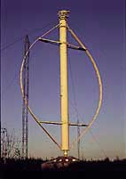

Wind
Turbines:
Horizontal or Vertical Axis Machines?

Horizontal
Axis Wind Turbines
Most of the technology described on these pages is related to
horizontal axis wind turbines (HAWTs, as some people like to
call them).
 The reason is simple: All grid-connected
commercial wind turbines today are built with a propeller-type
rotor on a horizontal axis (i.e. a horizontal main shaft).
The reason is simple: All grid-connected
commercial wind turbines today are built with a propeller-type
rotor on a horizontal axis (i.e. a horizontal main shaft).
 The purpose of the rotor, of course, is to
convert the linear motion of the wind into rotational energy
that can be used to drive a generator. The same basic principle
is used in a modern water turbine, where the flow of water is
parallel to the rotational axis of the turbine blades.
The purpose of the rotor, of course, is to
convert the linear motion of the wind into rotational energy
that can be used to drive a generator. The same basic principle
is used in a modern water turbine, where the flow of water is
parallel to the rotational axis of the turbine blades.
Eole
C, a 4200 kW Vertical axis Darrieus wind turbine with 100 m rotor
diameter at Cap Chat, Québec, Canada. The machine (which
is the world's largest wind turbine) is no longer operational.
Photograph
© 1997 Soren Krohn

Vertical
Axis Wind Turbines
 As
you will probably recall, classical water wheels let the water
arrive at a right angle (perpendicular) to the rotational axis
(shaft) of the water wheel.
As
you will probably recall, classical water wheels let the water
arrive at a right angle (perpendicular) to the rotational axis
(shaft) of the water wheel.
 Vertical axis wind turbines (VAWTs as some
people call them) are a bit like water wheels in that sense.
(Some vertical axis turbine types could actually work with a
horizontal axis as well, but they would hardly be able to beat
the efficiency of a propeller-type turbine).
Vertical axis wind turbines (VAWTs as some
people call them) are a bit like water wheels in that sense.
(Some vertical axis turbine types could actually work with a
horizontal axis as well, but they would hardly be able to beat
the efficiency of a propeller-type turbine).
 The only vertical axis turbine which has
ever been manufactured commercially at any volume is the Darrieus
machine, named after the French engineer Georges Darrieus
who patented the design in 1931. (It was manufactured by the
U.S. company FloWind which went bankrupt in 1997). The Darrieus
machine is characterised by its C-shaped rotor blades which make
it look a bit like an eggbeater. It is normally built with two
or three blades.
The only vertical axis turbine which has
ever been manufactured commercially at any volume is the Darrieus
machine, named after the French engineer Georges Darrieus
who patented the design in 1931. (It was manufactured by the
U.S. company FloWind which went bankrupt in 1997). The Darrieus
machine is characterised by its C-shaped rotor blades which make
it look a bit like an eggbeater. It is normally built with two
or three blades.
 The basic theoretical advantages of a vertical
axis machine are
The basic theoretical advantages of a vertical
axis machine are
1) you may place the generator, gearbox etc. on the ground, and
you may not need a tower for the machine.
2) you do not need a yaw mechanism to turn the rotor against
the wind.
 The basic disadvantages are
The basic disadvantages are
1) Wind speeds are very low close to ground level, so although
you may save a tower, your wind speeds will be very low on the
lower part of your rotor.
2) The overall efficiency of the vertical axis machines is not
impressive.
3) The machine is not self-starting (e.g. a Darrieus machine
will need a "push" before it starts. This is only a
minor inconvenience for a grid connected turbine, however, since
you may use the generator as a motor drawing current from the
grid to to start the machine).
4) The machine may need guy wires to hold it up, but guy wires
are impractical in heavily farmed areas.
5) Replacing the main bearing for the rotor necessitates removing
the rotor on both a horizontal and a vertical axis machine. In
the case of the latter, it means tearing the whole machine down.
(That is why EOLE 4 in the picture is standing idle).

|
Back | Home
| Forward |
© Copyright 2000 Soren Krohn.
All rights reserved.
Updated 9 September 2000
http://www.windpower.org/tour/design/horver.htm